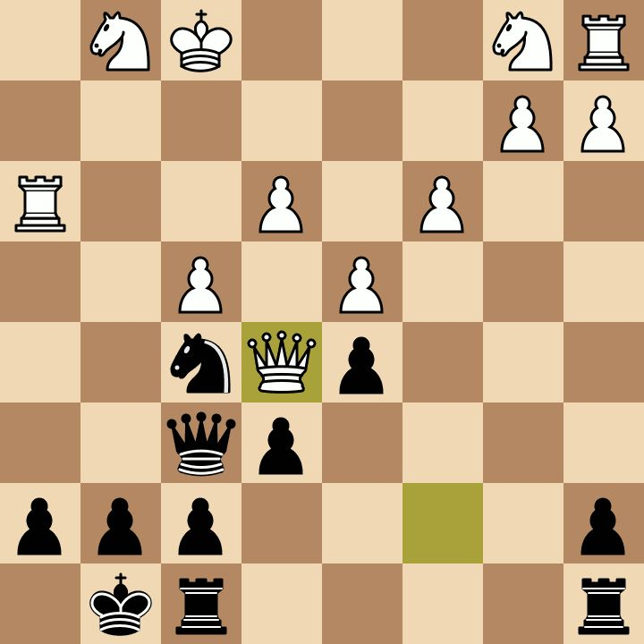

Szabadidőmet általában videójátékokkal töltöm de emellett még sok mindent szoktam csinálni. Itt vannak a kedvenc elfoglaltságaim:
Már általános iskolás koromban érdekelt a sakk, olyannyira, hogy még szakkörre is jártam belőle, és kisebb versenyen is indultam. Sajnos sokat felejtettem az évek alatt, de igyekszem ezt a tudást visszaszerezni. Sokszor szoktam online platformokon játszani emberekellen és gépek ellen is.

Sokszor szoktam filmeket nézni, nagyrészt csak horrort. Ez az a műfaj, amit egyszerűen nem tudok megunni :D. Ritkán fordul elő, hogy másfajta filmet nézek, de ha mégis, akkor általában sci-fi-t, aksciófilmet, vagy valamilyen paródiát. Az örök kedvenc filmem, ami egyben egy sorozat is, az a Fűrész.
Szeretek úszni, így néha vasárnaponként el szoktam járni úszni 1-2 órára a Pesterzsébeti uszodába. Nem egy nagy uszoda, de nem is kell nagyobb.
Ahogyan említettem az elején, a videójátékok a főbb szabadidős tevékenységeim, így azok sem maradhatnak ki. Legtöbb esetben többjátékos játékokkal szoktam játszani, azon belül általában belső nézetes, shooter játékokkal, vagy valamilyen stratégiai, ügyességi játékkal. Itt vannak a kedvenc videójátékaim:
Tom Clancy's rainbow six siege. Ez lényegében egy lövöldözős stratégiai játék, ahol két csapat mérkőzik meg egymás ellen különböző fegyverekkel és képességekkel. Az a csapat nyer, aki először iktatja ki a másik csapatot, vagy teljesíti a feladatot.
Dead by Daylight. Ebben a játékban 4 túlélő mérkőzik meg egy gyilkos ellen. A túlélők feladata, hogy kijussanak a pályáról minél hamarabb, mielőtt a gyilkos elkapja őket.
Counter Strike Global Offensive. A rainbow six siege-hez hasonlóan itt is két csapat harcol egymás ellen. A támadók feladata a bomba élesítése, a védő csapatnak pedig ezt kell hatástalanítani.